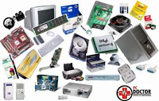
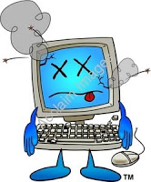
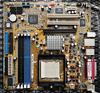

EL Mantenimiento Correctivo de Hardware es la reparación o el cambio que se le hace a algun componente de la computadora cuando se presenta una falla.
Este mantenimiento consiste en una pequeña soldadura de la tarjeta de vídeo, etc. o simplemente en el cambio total del Monitor o un Mouse, etc.
A diferencia del Mantenimiento Preventivo, el Correctivo se lleva a cabo cuando la falla ya se presentó, y en el Preventivo, como su nombre lo dice, es para prevenir alguna falla.
Este mantenimiento, generalmente tiene una duración de 1 a 5 horas, pero las horas dependen del problema y de la rapidez del equipo.

TIPOS DE MANTENIMIENTO CORRECTIVO:
º Mantenimiento correctivo NO PLANEADO:
En este tipo de mantenimiento es cuando se corrige la falla que presenta nuestra computadora, pero como su nombre lo indica este es no planeado, quiere decir que la falla aparece cuando no se espera, a veces ni origen sabemos de esta falla presentada.

º Mantenimiento Correctivo PROGRAMADO:
Este tipo de mantenimiento se corrigen fallas pero con hechos ciertos, en este mantenimiento no es necesario realizarlo en el mismo momento que presenta el problema, puedes resolver el conflicto y si no es urgente lo dejas para después y la computadora está bien, pero con esa pequeña falla.
En este tercer tipo de mantenimiento se corrigen fallas con hechos ciertos, pero este tipo actúa mas rápidamente que los demás porque es de emergencia, y lo hace rápido porque la falla lo requiere si no puede que el problema se haga mas grande más complicado y puede que se mucho más tardado.
ºEl Cambio de Monitor.
ºEl Cambio de Mouse.
ºEl Cambio de Teclado.
ºEl Cambio de Memorias.
ºEl Cambio de Board.
ºEl Cambio de Disquetera.
ºEl Cambio de Unidad Lectora CD y DVD.
ºEl Cambio de Buses.

-La PC No Enciende
ºUna de las soluciones.
Primero comprueba que la pantalla esté conectada correctamente y que no sea problema de ningún driver o algo así.
-La PC Enciende pero no tiene imagen.
ºUna de las soluciones.
Lo recomendable si tiene video, es que instale el sistema operativo desde cero.
Esto por supuesto formateando el disco de nuevo, es lo más aconsejable que puedes hacer.
-La PC se reinicia a cada rato.
ºUna de las soluciones.
Verificar que la Moderboard este asilada, puede ser que esté haciendo tierra en algún lado del cpu.
-El modem.
ºUna de las soluciones.
Hay que saber si el modem es o no un Winmodem. Esta línea especial de modems (o no tan modems) utilizan drivers propietarios que la mayoría sólo funcionan en Windows.
Sabiendo que no es un Winmodem el modem instalado puedes entrar en el archivo /usr/doc/HOWTO/Modem-HOWTO hay mucha referencia sobre modems y en especial un capítulo dedicado a problemas (Troubleshooting).
-El monitor se ve a 16 colores.
ºUna de las soluciones.
Verificar la tarjeta gráfica que puede que no se tengan bien instalados los drivers, debes intentar identificar el modelo de tarjeta gráfica y descargar los drivers adecuados.
-la placa de video.
ºUna de las soluciones.
En ocasiones hay que desactivar manualmente desde el BIOS el video onboard, este queda anulado.
-El puntero no se mueve.
ºUna de las soluciones.
Pues en caso que el mouse sea de bolita o ejes debes de sacar la bolita y limpiarla, y si es de laser debes de limpiar el pad, y si en caso de que ya no funcione con esto pues tendrás que comprar otro.
-El teclado no responde.
ºUna de las soluciones.
si el teclado es inalámbrico cambiando las pilas, y volviendo a sincronizarlo con el transmisor, y si el teclado no es inalámbrico, Reinicie el equipo.